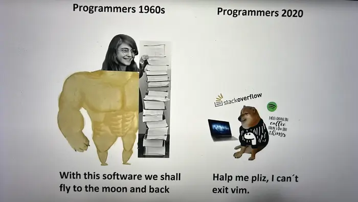

terminal text editors
Posted: June 23rd, 2025 9:33 AM
reference: this piece mentions a 'lab' which is in reference to the cloudskillsboost.google (qwik labs) lab 'Introduction to Docker'. this was written as an assist for classmates in a database administration class.
For some of us it may be our first time using a text editor from a terminal. I love Neovim and was using Vim in WSL for awhile then I wanted a bit for functionality and moved to Neovim. At first it can be daunting and scary to work within a terminal. However, there is some feeling of 'wow, it's real. i actually can program' that arises when all you see in front of you is a blinking cursor and text.
In the docker lab this week for our assignment you are prompted to 'edit the file with your favorite text editor'. Depending on what OS is running within the VM/container you will have incredibly limited options; vim or nano are almost universal. On a real 'server' Linux distro like FreeBSD you don't even have vim, you only have it's predecessor 'vi'. In any event, it can be difficult to understand how to use them, save what you did, and exit them.

Within the lab this week you can either use Nano or Vim. Here are two simple walkthroughs to complete the task.
Vim
Vim uses key binding in order to make usage simpler, since the idea is that from a server you won't have the luxury of using a mouse because the terminal is not really a GUI, it's a terminal.
When you are in the appropriate directory in Vim you will open the file using the following command:
vim app.js
This will open the vim text editor for the file you have specified.
To navigate in Vim you have two options: arrow keys (if you enjoy being a n00b and will end up going back to VS Code anyways) or HJKL (if you plan on becoming a vim giga chad).
H moves the cursor left, J moves the cursor down, K moves the cursor up, and L moves the cursor right.
Vim is also incredibly robust with key bindings in the sense that every single key is likely mapped to some kind of action. For example, if your cursor is over a line you can push 'yy' and you will 'yank' the line (copy it to your Vim clipboard) and then you can push '3j' to move 3 lines down and then you can push 'p' to 'paste' the line.
Vim is essentially a language with adverbs, verbs, nouns and even some adjectives I guess.
The easiest way to traverse a line (move from left to right) is to use the 'w' key. This key will move you to the 'next word'. This means that we can combine an adverb, a verb, and a noun in the Vim 'key binding language' to perform an action. If we want to copy the next 3 words we can push '3yw'. This will 'do 3 action', 'of copying', 'the next word'. Or, in plain english, copy the next 3 words.
Now that we have Vim open we need to get to the line of the 'Hello World' text. You can either user a robust key binding (known as a macro, because we make something 'big' into something 'small' and digestible) or use the arrow keys or click the line with your mouse.
Once there we could place our cursor over the H and push 'dw' to delete the next word or we could place our cusor over the last letter in 'World' and then prepare to edit the code.
Whichever method we use, we now are introduced to 'modes'. Vim creators knew that there would be different use cases for Vim. So there are three main modes: Normal (the mode you enter when you open Vim), Visual (this will move your cursor and help you 'highlight' text which you can then copy using the 'yy' macro, and Insert (which is where we can edit text). Each mode is mapped to a different key. Visual is mapped to V and Insert it mapped to I.
Once our cursor is highlighting where we want we can push the 'i' key to enter insert mode and then begin editing the text. You can and should use your backspace key once you are in insert mode. Insert mode does not adhere to the 'vim macros' that are available in normal mode or visual mode.
Edit the text in the way you want and then we are ready to return to normal mode to 'save' or 'write to the file' the changes we have made. To leave insert mode we push the 'ESCAPE' key in the top left of the keyboard. Once we are in Normal mode again we can save our change by using the last mode, 'Command' mode. Command mode is always entered by typing ':' (a colon). This means that you need to push your shift key and push the ': ;' key on your keyboard to actually 'type' a colon. Now we can use macros by entering them as text into this command mode. There are lots of different macros but two most important ones in command mode.
The first is 'w'. 'w' will write the file or, in other words, save the file. You could type ':w' and then push enter to write the file or we can daisy chain the commands together. 'q' will quit Vim or, in other words, return you to your terminal.
So if we wanted to save the file and quit Vim in one action we would be in normal mode and then we would type ':wq' and push enter. The file would then be saved and then Vim would exit and we would return to the terminal.
Boom, you are now Vim-pilled. I love Vim and Neovim because working from the terminal is the closest environment to where real code actually runs in the real world. At enterprise software companies your code does not run from a VS Code window. No. AirBNB code runs on a server. Thus, in my opinion, the best way to write code is in an environment that most closely mimics where the code will actually be running for your end users. Similarly, this helps you be more comfortable with interacting with the cloud and forces you to learn how to master complex technology. I am a Neovim-maxxi and I think everyone should be.
VS Code is a great tool, but it abstracts away too much complexity and it makes working in a cloud environment too uncomfortable for the average developer. Using your terminal and a terminal text editor can help you master your keyboard and eventually, the cloud.
The second text editor it mentions is Nano, which is similar to Vim but different enough that I will briefly explain how to use it. I believe that nano is default installed on almost every single OS (I'm not sure about Windows, but Windows should almost never be used anyway unless you are making something with a Microsoft product). Nano is relatively small in file size hence it is typically the defacto for being available on most operating systems.
So to use nano we navigate to the directory where the file we want to edit is. We can then use:
nano app.js
To open the 'app.js' file in Nano. We can now immediately start typing if we want to. I think the easiest way to navigate in nano is using the arrow keys so we navigate to the 'Hello World' text which we are to edit in the assignment and then we can backspace to remove the text and input our own string.
Now to write the file and exit. There is a footer in Nano which shows some commands. The up arrow next to the letter is the symbol indicator for the 'Control' key on the left side of your keyboard. So to write the file you push Control-O ( you don't need to push Control Shift O, just Control O). This will 'write out' or save the change you have made to the file. You can then push Control-X to leave Nano. Again you don't need to worry about pushing Control Shift X, just Control and your X key.
Like I said, I am a neovim-maxi. Here is a screenshot of my current setup. I recently got a Macbook and so I spent last weekend setting everything up just the way I like (configuring my dot-files). This config uses the default Terminal.app, Zsh (not Bash), oh-my-zsh (for plugins), powerlevel10k for the theme and the bar that shows my user@host and the time in my command line, tmux (so that I can make panes in a single terminal window. this is handy if I am using a server and writing code. I write code in one pane and then see the server or container output stream in the other pane), and of course Neo vim.
![this is a picture of dalin stones default terminal setup on his macbook pro. the setup displays a terminal window of the basic Terminal.app on a Macbook Pro using zsh, tmux, and neovim. powerlevel10k is the theme that allows for a bar displaying the username and host, the current directory, and the git status on the left and the time, number of processes, and execution time on the right. with the use of tmux there are multiple windows open and there is a background image for the entire window of a deep, dark toned blue and black tyrael the archangel like character with angelic almost electric blue wing tendrils and a large blue sword in a battle field. the display of power is mangificent, mysterious, and incredibly intimidating as he embodies the perception of justice amongst skulls and bones, implying he has slain demons.](tyrael-terminal.webp)
Hopefully this helped someone who is new to the terminal or motivated someone to finally pull the trigger and learn Neo vim. I've been working in tech for only 4 years now and the only time a company has standardized on VS Code is when we had a manager who had no idea what they were doing in theory or practice. That should be telling enough about how badly you can get hamstringed by your tools. It's also telling that at my current workplace everyone is using some kind of terminal based text editor. It's not a testament that 'using this tool means you are smart' it's more so a statement that 'if you choose to use this tool, you need to inherently become smart' and helps guide your journey.
lesson
using old tools is not always a bad thing. similarly, using new tools is not always a good thing. the terminal is eternal and the fundamental approach to building computers would have to change in order for the terminal to become obsolete.
take time to master neovim and make a configuration that you could use on any machine you have the option of configuring